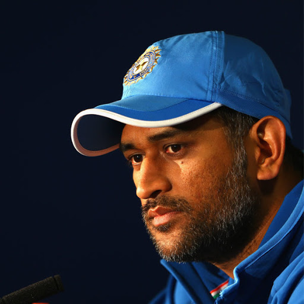
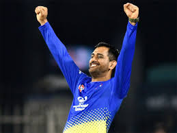
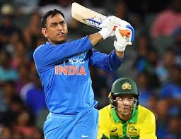

A tribute to
MAHENDRA SINGH DHONI
(Man who defines COOLNESS...)

TAKE ACTION IN SILENCE , NO LION ATTACKS IN NOISE.
- Born on 7th of July 1981,a former Indian international cricketer who captained the Indian national team in limited-overs formats from 2007 to 2017 and in Test cricket from 2008 to 2014.
- Under his captaincy, India won the inaugural 2007 ICC World Twenty20, the 2010 and 2016 Asia Cups, the 2011 ICC Cricket World Cup and the 2013 ICC Champions Trophy.
- Born in Ranchi, Bihar (now in Jharkhand),and hails from a Hindu Rajput family.
- Career Points:-
- Junior cricket in Bihar : In 1998, Dhoni was selected by Deval Sahay to play for the Central Coal Fields Limited (CCL) team.Till 1998 Dhoni, who was in class 12th in school, had played only school cricket and club cricket and no professional cricket.
- Bihar cricket team : Dhoni made his Ranji Trophy debut for Bihar in the 1999–2000 season, as an eighteen-year-old.He made a half century in his debut match scoring 68* in the second innings against Assam cricket team and Dhoni finished the season with 283 runs in 5 matches.
- Jharkhand cricket team : In the 2003/04 season, Dhoni scored a century (128*) against Assam in the first match of the Ranji ODI tournament. Dhoni was part of the East Zone squad that won the Deodhar Trophy 2003–2004 season and contributed with 244 runs in 4 matches, including a century (114) against Central zone.
- India A team : He was recognised for his efforts in the 2003/04 season, especially in the One Day format and was picked for the India A squad for a tour of Zimbabwe and Kenya.
- International career :-
- Start of ODI career : With Dhoni making a mark in the India A squad, he was picked in the ODI squad for the Bangladesh tour in 2004/05. Dhoni did not have a great start to his ODI career, getting run out for a duck on debut. In spite of an average series against Bangladesh, Dhoni was picked for the Pakistan ODI series.
- Post 2011 World Cup :India won the away ODI series in England in 2014 by 3–1 and series against West Indies in India by 2–1 margin. Dhoni had a good performance with the bat scoring a half-century in each of the series.
- 2015 World Cup : In an unsuccessful effort against eventual champions Australia in the semi-finals, he made 65 as India were unable to defend their title.
- T20I career :On 12 February 2012, Dhoni made an unbeaten 44 to guide India to their first win over Australia at Adelaide. In the final over, he hit a monstrous six which travelled 112 meters off the bowling of Clint McKay. He was named as captain and wicketkeeper of the 'Team of the Tournament' for the 2014 T20 World Cup by the ICC.
- 2007 ICC World Twenty20 : MS Dhoni was chosen to lead India in first-ever World T20 in 2007. And he became the second Indian captain to have won a World Cup in any form of cricket, after Kapil Dev.
Believe- The Mahi way.
You don’t play for the crowd , you play for the country.